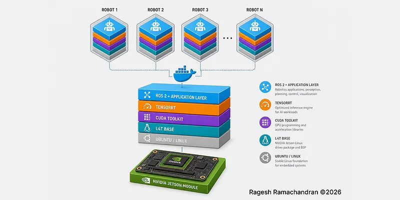
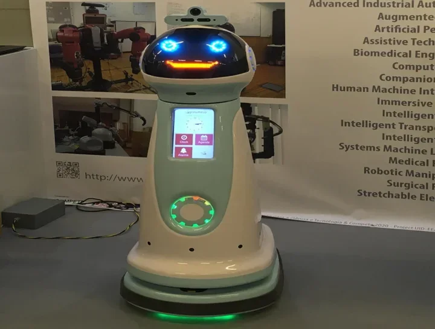
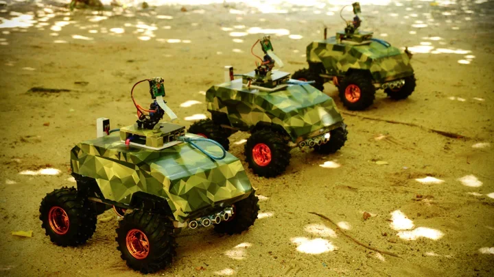

The Complete Guide to Podman for ROS 2 (2026 Edition): From Zero to Production-Ready Robotics
It usually starts with the same promise: this time the robotics environment will stay clean.
Read on MediumI’m a robotics engineer, a builder, and someone who enjoys turning ideas into things that move. I build robots and write the software that brings them to life.
My work has taken me from planetary rovers to industrial manipulators, with stops along the way in autonomous navigation, multi-robot systems, and research at Fraunhofer IPA. I also founded Phyction Technology Labs.
I write about the practical side of robotics on Medium — ROS 2, development environments, and the engineering decisions that help robots work beyond a demo.
I’m interested in bringing robotics, AI, and sustainable energy to agriculture. Away from the workbench, I enjoy backpacking, photography, and a good movie.
Build something. Stay curious. Share what you learn.
Notes from the workbench, published on Medium.
It usually starts with the same promise: this time the robotics environment will stay clean.
Read on Medium
A robot works perfectly on a developer laptop, the demo looks clean, the nodes talk to each other, RViz opens, and confidence is high. Then the software gets pushed to another machine, a…
Read on Medium
Not dev kits on a lab bench. Actual robots that move and interact in messy environments, with customers expecting them to work 24/7. In that context, every “small” technical decision…
Read on Medium
But what exactly is l4t-base? And why does it matter so much for robotics software, perception stacks, and containerized autonomy?
Read on Medium
Let me be fair. Docker dev containers were a genuine step forward. Before them, onboarding a new engineer to a ROS 2 project meant pointing them to a 10-page wiki and hoping for the…
Read on Medium
Fleet management is not about making one robot work. It is about making many robots behave in a predictable, repeatable, and observable way. That sounds simple, but in practice it is…
Read on Medium
We were about to run a high-stakes demo for a multi-robot research project. Three autonomous robots were supposed to execute a perfectly coordinated logistics sequence. During the dry…
Read on MediumTry another topic or search term.
Robots that explore, work together, and find their way home.
 Phoenix IIUnited Kingdom Rover Challenge, 2016
Phoenix IIUnited Kingdom Rover Challenge, 2016

A ROS routine that brings a patrol robot back to its charging station.

Multi-camera infrared localization for robots in a shared workspace.

A master–slave teaching pendant for industrial robotic arms.

Coordinating aerial and ground robots in a multi-robot system.
Research, collaboration, and hands-on engineering.
Founder
Robotics Research Associate · Research Assistant
Internship
Summer Internship
Research Assistant
Mechatronics and Intelligent Systems
Research Lab
Team Lead, Phoenix I & II · 2016
System Integration ·
2015
“He is a quick learner and is amazingly committed to his work.”
“His ability to lead and coordinate is incredible.”
“Ragesh showed great leadership quality throughout the project by taking up challenges.”
“He is a creative thinker and is updated with latest technologies.”
Excerpts from recommendations shared on my original portfolio.
Working on something in robotics, or just curious about the same things? I’d be glad to hear from you.
Say hello on LinkedIn